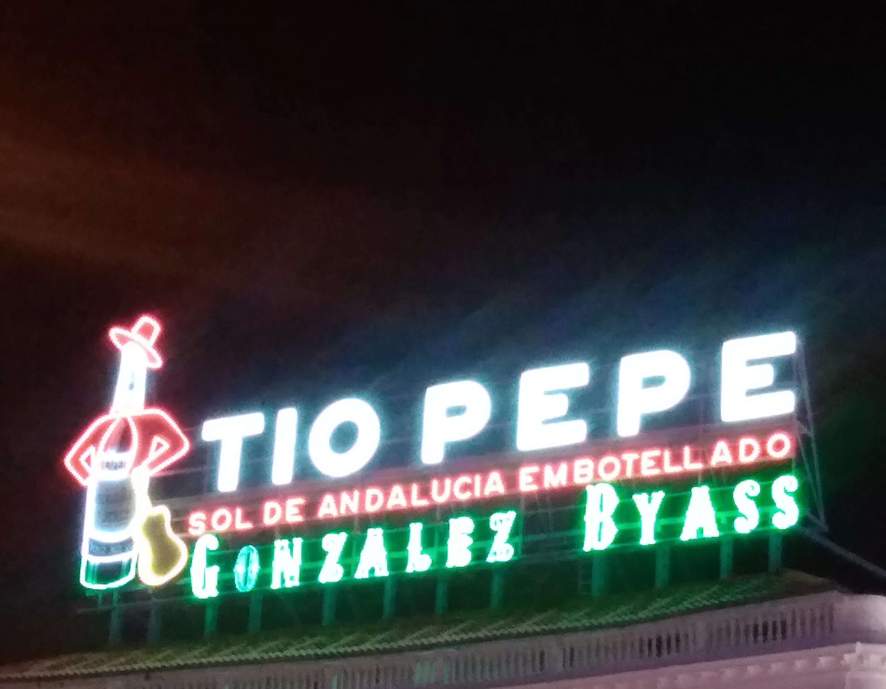

Madrid has always have been the main and most familiar way out of Europe travelling west and a city that I always like to visit because of its welcoming-rusty and dusty attitude, the botellón culture and the easiness with which you stumble on locals and get taken into the endless city nightlife. Lavapiés is a district that makes me feel like home every time I visit, especially when I stand in front of El Tres drinking cañas and thinking about how to spend the rest of the evening. La Chueca and Malasaña were the places of my first Madrid days during my early twenties, on my way from Andalusia to Catalunya where I started a new life in the city of Barcelona. The romantic working class barrio of Vallecas with its tough living conditions, used to be one of the most dangerous of the city and it still keeps nowadays its political attitude as can be seen through the life of a criminal whose soul jumped from the eight floor or a social house, leaving him and his tatooes motionless on the balcony looking down, as in Melendi's Mesías de Vallecas. Madrid is also the place where I started my journey to Morocco, Mexico and Colombia, without really having the time to rest before leaving for a long trip with the noise calling me from the calles, asking me to go and enjoy life now. The last time I went, I was there only for a brief visit of one day before flying to Bogotá. We decided to squeeze in a short visit to El Prado, which is free on saturdays, rushing through the museum like the folks from Bande a part, trying to see the most in the least amount of time, running through The Garden of Earthly Delights by Hieronymus Bosch (my favourite painting ever), looking at it from all possible sides and then going past the flickering Maya who keeps getting dress and undress, to all the Caravaggios and the incredible way he had to master light, to the 3rd of May and how it might feel to face death with a shotgun and to the astonishing Viejo desnudo al sol, enjoying the last bits of life under the sun, careless, free, joyful and unshamingly beautiful.
Tauromaquia has always been part of Spanish culture and popular tradition and a topic that interested many artist in general, for its violence, for the constant fight between the human and the animal and for its poetical proximity to death, risk and uncertainty. Between the many who depicted Tauromaquia, the most remarking works were those of Francisco Goya, Pablo Picasso and Ernest Hemingway. Francisco Goya is probably the most influential painter of Spain ever, and that's because his art went through various historical eras, including the independence wars that Spain has to fight between 1808 and 1814 that led to the country independence and also because his way of painting that within the years went through different techniques without losing his artistic identity. Goya was an idealist and saw art as something moral and not as something purely aesthetical. In his Tauromaquia series of sketches (33 draws published in 1816), Goya's ability in seizing the moment, together with the rough perfection of which the clash between the torero and the toro is described, is truly great. The reasons why Goya went on the topic are not entirely well known; it might be that in such a turbulent political phase, the artist decided not to focus on something political, or according to other sources he was facing the need to overcome a personal crisis and he did it through drawing such shocking cathartical scenes. Nevertheless Goya was a Tauromaquia lover and in one of his paintings he also painted himself dressed as a Torero "La Novillada"(1780). Pablo Picasso during his career was also involved in representing the topic of Tauromaquia, partly inspired by his hometown for obvious reasons (as a child he used to go to Corridas with his father) and partly inspired by the works of Goya that I mentioned above. These works were commissioned to Picasso as the illustrative part of a book called "La Tauromaquia o arte de torear" View at MoMA. Ernest Hemingway unlike Goya and Picasso is the only one who does not have Tauromaquia as sort of cultural national heritage but his devotion to Spain as we can notice in a consistent part of his production, also includes a passion for bull fight. In 1932 he published "Death in the Afternoon", a guide more than a fictionary book, where the author describes meticulously all the practises of a torero and makes out of Tauromaquia, something almost metaphysical, an eternal natural cycle of life and death.